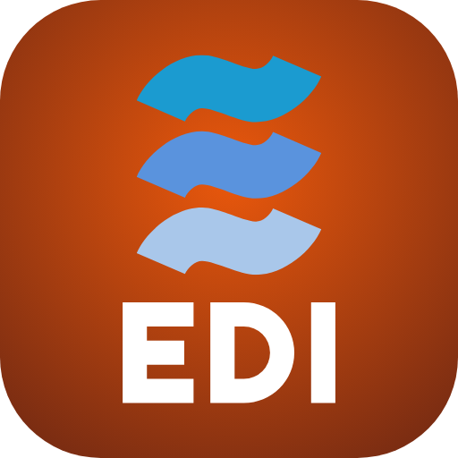

Membuka EDI Beta… 0%
EDI Beta
Versi uji Stage 2 — hanya untuk David. Tim tetap memakai EDI biasa.
Buka EDI Beta
Pasang di HP Android
Tekan Pasang aplikasi. Kalau tombolnya tidak muncul: menu ⋮ di Chrome → Instal aplikasi (atau Tambahkan ke layar utama → Instal).
Pasang di iPhone
Hanya bisa lewat Safari. Salin link, buka Safari, lalu tempel di kolom alamat.
- Tekan Bagikan di bawah layar Safari.
- Pilih Tambah ke Layar Utama, lalu Tambah.
- Buka EDI Beta dari ikonnya di layar utama.
Dibuka dari WhatsApp? Tekan dulu ikon Safari (kompas) di pojok bawah.
Masuk dengan akun Google @delosaqua.com milik David.